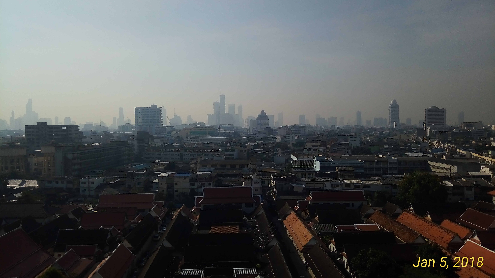
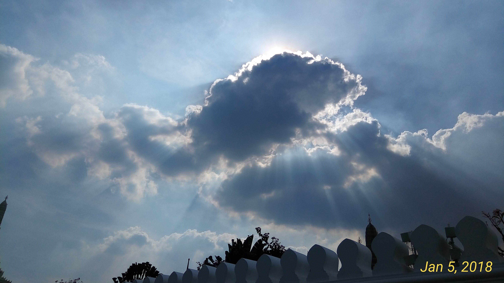
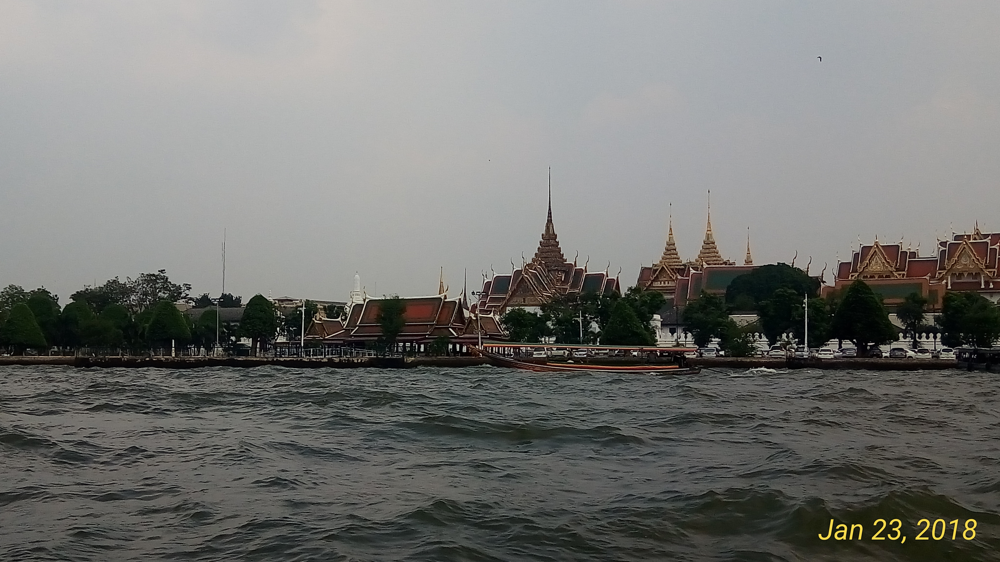

What's New
-

Poetry
-

Prose
-

Lesson
Vietnamese
Contact
E-mail: Nimit.kumwapee.offi13@gmail.com, Nimit.kumwapee@gmail.com
About me
I am currently a graduate student in linguistics at Faculty of Arts, Chulalongkorn University. I am interested in both linguistics and literature. My interest in linguistics is about phonetics, syntax-semantics interface, and pragmatics. For literature, I am interested in literature and film, and environmental literature.